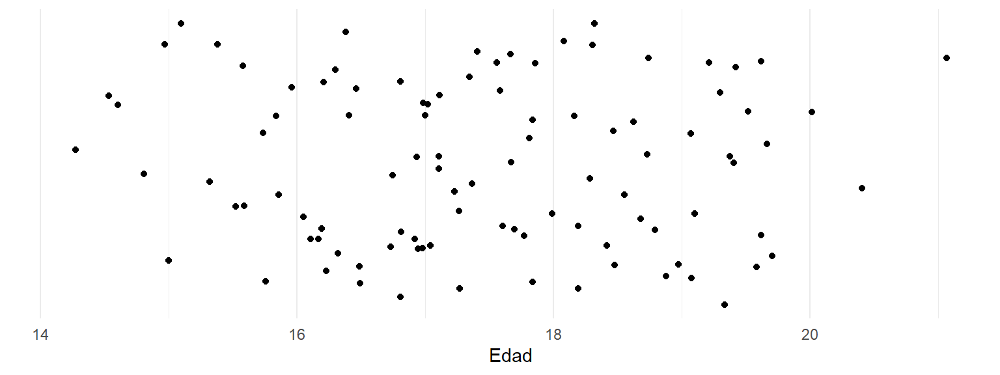
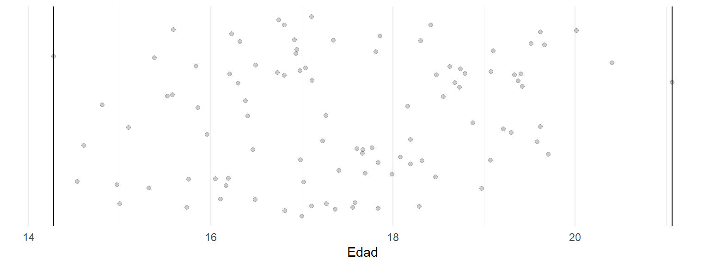
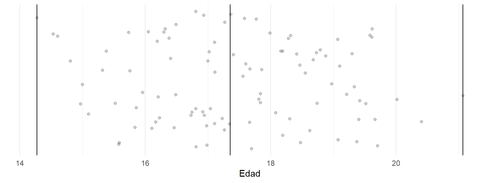
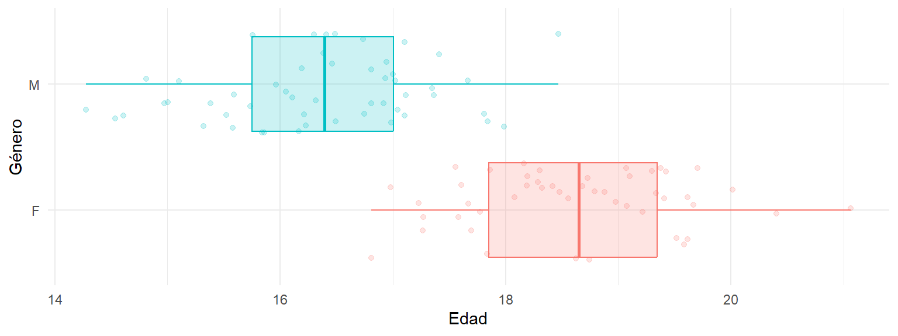

1 Preliminares
La estadística, en su concepción moderna, es el resultado de un extenso desarrollo histórico y epistemológico que refleja la evolución del pensamiento humano en su búsqueda de regularidades observables en los fenómenos naturales. Si bien su aparición como concepto se remonta hasta 1770, sus raíces como práctica se remontan a la antigüedad, cuando las civilizaciones de Babilonia y Egipto utilizaban métodos de conteo y registro para la administración de los recursos. Estas aplicaciones configuraron un acercamiento del concepto estadística con la actividad gubernamental que ha perdurado hasta la actualidad, a través de los orígenes etimológicos de la palabra, proveniente del latín status o estado.
Siglos después, el descubrimiento de las regularidades en los juegos de azar practicados en Grecia y Roma daría grandes aportes a la teoría estadística. Sin embargo, debido a las ideas religiosas y filosóficas del medievo, que suponían una explicación de la ocurrencia de los eventos gracias a la voluntad divina en lugar de operar según leyes de probabilidad, no sería hasta el Renacimiento cuando se formalizaría el pensamiento probabilístico, de la mano de figuras como Gerolamo Cardano y Pierre de Fermat, quienes cimentaron las bases matemáticas que darían forma a su carácter científico. Al mismo tiempo, en el campo de la astronomía se acrecentó la medición de los fenómenos celestes, gracias a científicos como Galileo, Pascal, Laplace y Gauss, que realizaron contribuciones como la distribución continua y la distribución normal.
Más adelante, a partir del siglo XVIII los métodos estadísticos se extendieron más allá de las ciencias naturales y se introdujeron fuertemente en las ciencias sociales, fundamentalmente, a través de la economía, la sociología y la demografía, lo que permitió el uso de sus postulados en el estudio de los mercados, de la organización social y de las poblaciones, respectivamente. En cuanto a su evolución como ciencia, la epistemología de la estadística comenzó a consolidarse con las contribuciones de pensadores como Thomas Bayes, quien introdujo un enfoque probabilístico basado en la actualización del conocimiento, y Carl Friedrich Gauss, cuya teoría de errores cimentó el papel de la estadística en la inferencia científica. Así, a medida que el método científico se institucionalizaba, la estadística se convirtió en un vehículo para traducir fenómenos observables en explicaciones cuantitativas, adoptando principios de objetividad, reproducibilidad y rigor.
El siglo XX marcó una transformación paradigmática en el campo de la estadística, impulsada por los avances en la teoría de conjuntos, el cálculo y la computación. La estadística inferencial y la probabilidad frecuentista, promovidas por Fisher, Neyman y Pearson, coexistieron con enfoques bayesianos, provocando debates epistemológicos sobre la naturaleza del azar y la inferencia. Esta diversidad metodológica enriqueció su aplicabilidad, desde el diseño de experimentos hasta el análisis de sistemas complejos en las ciencias sociales.
Hoy, la estadística es no solo un instrumento técnico, sino también un lenguaje epistemológico que da forma a cómo entendemos la realidad. Su desarrollo histórico subraya la tensión entre el dato y la interpretación, entre el caos del mundo empírico y la búsqueda de orden intelectual.
1.1 Definiciones
El lenguaje matemático es un subconjunto del lenguaje y, por tanto, su estudio debe partir por la comprensión de su morfología y sintaxis. La estadística, como disciplina, se basa en el análisis sistemático de información cuantitativa o cualitativa para describir, interpretar y predecir fenómenos. Tres conceptos clave estructuran este análisis: los datos, las variables y los individuos. Cada uno cumple un rol específico, interconectado y esencial en el proceso de generación de conocimiento.
1.1.1 ¿Qué son los datos?
Los datos son el registro de observaciones, medidas o respuestas recopiladas sobre un fenómeno o población de interés. Constituyen la materia prima del análisis estadístico y pueden ser numéricos (cuantitativos) o descriptivos (cualitativos). Los datos por sí mismos son neutros; adquieren significado solo cuando se contextualizan y se analizan en relación con una pregunta o hipótesis.
Por ejemplo, el registro de temperaturas diarias en una ciudad o las respuestas a una encuesta sobre hábitos de consumo son datos. Estos sirven como base para identificar patrones, realizar comparaciones y construir modelos que representen aspectos de la realidad.
El análisis de datos es la columna vertebral de la investigación científica y social, en la búsqueda de extraer patrones, relaciones y tendencias a partir de observaciones sistemáticas, por lo que comprender sus diferentes tipos y propiedades es esencial para elegir las metodologías y enfoques más adecuados. No obstante, esta labor presenta diversos obstáculos en el ámbito de las ciencias sociales, tanto en la brecha significativa entre las competencias cuantitativas necesarias para el análisis de datos y las herramientas empleadas por los investigadores, como en la resistencia hacia el aprendizaje de habilidades cuantitativas.
El uso de programación en el análisis de datos es frecuentemente percibido como un campo exclusivo de disciplinas STEM (ciencia, tecnología, ingeniería y matemáticas). Esta percepción puede desmotivar a los científicos sociales, quienes a menudo ven estas competencias como ajenas a sus intereses y tradiciones. Aún así, a medida que las metodologías de análisis avanzan, la integración de enfoques cuantitativos se vuelve inevitable. La combinación de grandes volúmenes de datos (big data), tecnologías accesibles y herramientas estadísticas ha revolucionado la forma en que se abordan preguntas de investigación. Desde el análisis de redes sociales hasta el estudio de comportamientos colectivos, las ciencias sociales dependen cada vez más de métodos que requieren un manejo competente de datos y software especializado.
De cualquier modo, el primer paso para el desarrollo de estas habilidades cuantitativas consiste en cambiar de mentalidad respecto al uso de datos y reconstruir esta relación requiere un cambio de perspectiva en varios niveles. A nivel formativo, a través de la incorporación de competencias de programación, análisis de datos y estadística en la formación de los científicos sociales, con un enfoque interdisciplinario. A nivel técnico, en los currículos de las ciencias sociales deben integrarse herramientas como R, Python y software estadístico especializado (en especial, de código abierto) que permitan a los científicos sociales realizar análisis más complejos sin depender de costosos recursos. A nivel profesional, gracias a la aplicación del análisis de datos en sectores como el marketing, la planificación urbana y el desarrollo comunitario.
Un primer acercamiento a los datos puede verse de esta manera. Para nuestro ejemplo vamos a pensar en un conjunto de 100 personas que recién ingresan a una universidad en Bogotá en 1990, indagamos el género y la edad de cada una de ellas. Estos datos se pueden ver de esta forma.
Esta forma de ver los datos no nos entrega una información fácil de comprender. Por esta razón, la visualización de datos es importante en el análisis estadístico. Para comprender mejor, abordemos primero la edad. Podemos ver los datos de la edad como puntos en el eje horizontal.

Esta visualización nos entrega un poco más de información, podemos entender el valor más alto, el más bajo, y en general el espacio que ocupan los datos en el eje horizontal. Los datos que ocupan mucho espacio se llaman dispersos, si el espacio es poco, se llaman concentrados. Más adelante veremos medidas para esta característica y profundizaremos al respecto. Para verlos mejor, podemos diseminarlos verticalmente. Este es un truco que ayuda a comprender mejor los datos, impidiendo que se sobrepongan los puntos. Para esto se agrega ruido en el eje vertical, pero este ruido no tiene significado.

Podemos trazar líneas imaginarias para entender mejor los datos. Las primeras líneas imaginarias son el máximo y el mínimo. Al trazar estas líneas podemos contener el 100% de los datos. Es muy fácil.

Ahora trazamos una línea que divide los datos en dos conjuntos de igual magnitud. A la derecha de la línea se encuentra la misma cantidad de datos que a la izquierda. Esta línea se encuentra en un punto muy importante del eje horizontal, este valor se denomina la mediana. La mediana de un conjunto de datos es el valor que divide a los datos en dos conjuntos de igual magnitud.

Usando más líneas imaginarias podemos dividirlos en cuatro partes iguales. Estas líneas imaginarias distribuyen los datos de la edad en cuatro conjuntos de igual magnitud. Al igual que la mediana, estos valores son importantes. Se denominan cuartiles. En cada uno de los conjuntos resultantes, se encuentra el 25% de los datos.
Entonces, funciona de la siguiente forma: el cuartil cero \((Q_0)\) corresponde al valor mínimo; el primer cuartil \((Q_1)\) separa el 25% de los datos; el segundo cuartil \((Q_2)\) coincide con la mediana, porque separa el 50% de los datos; el tercer cuartil \((Q_3)\) separa el 75% de los datos; y el cuarto cuartil \((Q_4)\) coincide con el máximo de los datos.
Estos cuartiles en general no tienen la misma distancia entre ellos. Lo usual es que se ubiquen en distancias diferentes según los datos.

Estas líneas imaginarias se pueden consolidar en un solo gráfico, que se denomina gráfico de caja y bigotes, conformado por la mediana y los cuartiles. Este gráfico es esencial en el análisis de datos como veremos en muchas investigaciones.
Este gráfico tiene un cambio con respecto a la construcción anterior: aquí se utilizan un máximo teórico y un mínimo teórico. Esto se realiza con el fin de identificar visualmente los datos de los extremos.

Abordemos el género ahora. Podemos usar el color para identificar el género en los datos. Realizamos el mismo procedimiento añadiendo el color del género. En este caso, ya podemos identificar la tendencia, de puntos rojos más a la derecha y azules más a la izquierda.

Organizamos los datos verticalmente por género. Esto nos permite tener dos nubes de puntos y facilita la interpretación, ahora es más notoria la tendencia hacia a la derecha y hacia la izquierda de los puntos rojos y azules respectivamente.

Al elaborar un gráfico de caja y bigotes para cada género es posible ver la tendencia. Esta característica que no resultaba fácil de identificar en el primer gráfico ahora es muy evidente. Las medianas y los cuartiles de los datos agrupados por género difieren. Esto nos permite obtener hipótesis que podremos comprobar más adelante.

1.1.2 ¿Qué son las variables?
Las variables son características o atributos que pueden tomar diferentes valores entre los individuos de un conjunto o población. Representan las dimensiones específicas que se desean observar en un estudio y funcionan como el puente entre las observaciones individuales y los análisis que buscan generalizar comportamientos.
Las variables se clasifican según su naturaleza en:
Numéricas: Estas variables representan magnitudes numéricas que se pueden medir. Estas variables son esenciales en áreas como la economía y la biología, donde los fenómenos físicos y financieros se representan mediante medidas precisas.
Discretas: Toman valores finitos o contables, como el número de hijos en una familia.
Continuas: Admiten infinitos valores dentro de un rango, como la temperatura medida en grados Celsius.
Categóricas: Representan atributos o categorías que no necesariamente poseen un valor numérico. Las variables categóricas agrupan a los individuos en categorías o clases. Este tipo de variable es fundamental en estudios demográficos y de percepción social, donde las características subjetivas y de identidad son el foco principal.
Nominales: Categorías sin orden intrínseco, como el color de los ojos o el estado civil.
Ordinales: Categorías con un orden lógico, como los niveles educativos o el nivel de satisfacción.
Las variables permiten organizar y estructurar los datos para su análisis de acuerdo con los intereses de la investigación. Por ejemplo, en un estudio sobre la educación, “nivel educativo” podría ser una variable cualitativa ordinal, mientras que “puntaje en una prueba” sería una variable cuantitativa continua.
1.1.3 ¿Qué son los individuos?
Los individuos son las unidades básicas de observación o análisis dentro de una población. Pueden ser personas, objetos, organismos, eventos o entidades, dependiendo del contexto del estudio.
Por ejemplo:
En un censo poblacional, los individuos son las personas encuestadas.
En un experimento agrícola, los individuos podrían ser plantas o parcelas de tierra.
En un análisis de mercado, los individuos son los productos o consumidores.
Cada individuo se caracteriza por tener valores específicos para las variables consideradas en el estudio. Por ejemplo, en una encuesta sobre hábitos alimenticios, un individuo (una persona) podría tener valores como edad = 30 años, género = femenino, y frecuencia de consumo de frutas = 5 veces por semana.
En términos analíticos, los individuos son la fuente de datos a partir de los cuales se construyen modelos, hipótesis y conclusiones. La elección de los individuos y su caracterización es clave, ya que determina la validez y generalizabilidad de los resultados. Por ejemplo, en un estudio sobre hábitos alimenticios, seleccionar individuos representativos de diferentes regiones y estratos socioeconómicos garantizará que las conclusiones puedan extrapolarse al resto de la población. Este concepto está íntimamente ligado al diseño del muestreo y la operacionalización de las variables.
Cabe aclarar que en el análisis de una población no se estudian los individuos por separado y al máximo detalle, sino que se pretende identificar tendencias que representen comportamientos agregados que emergen de las características individuales de una población. A diferencia de una afirmación puntual o específica sobre un individuo, las tendencias buscan capturar patrones generalizables que describen cómo un grupo, en promedio, se comporta respecto a una variable o conjunto de variables. Este enfoque es crucial en disciplinas como la economía, la sociología y la epidemiología, donde los fenómenos globales informan decisiones de política pública o estrategias organizacionales.
Por ejemplo, al analizar los hábitos de consumo en un país, una tendencia podría revelar que el promedio de gasto en entretenimiento es más alto en grupos jóvenes que en mayores de 50 años. Sin embargo, esta tendencia no asegura que todos los jóvenes gasten más en entretenimiento, sino que describe un comportamiento predominante dentro de la población estudiada. Este desajuste entre las tendencias y los comportamientos individuales resalta la importancia de interpretar los datos globales como representativos, pero no absolutos.
1.1.4 Medición: Asignación de valores a las observaciones
Una vez se han comprendido los conceptos de dato, variable e individuo es de suma importancia recabar en el papel crucial que juega la medición en el análisis de datos. En este orden de ideas, cabe señalar que la medición es siempre una operación subjetiva, en la medida en que el mundo medido es el mundo visto desde la perspectiva de un sujeto. Luego, no hay medición si no hay sujeto que mide.
La medición es el proceso mediante el cual las características de los individuos se transforman en datos observables y cuantificables. Este proceso debe ser riguroso y consistente, basado en reglas preestablecidas que garanticen la comparabilidad y la reproducibilidad de los resultados.
Por ejemplo, en un estudio sobre bienestar subjetivo, es esencial que las escalas utilizadas para medir “felicidad” o “satisfacción” estén claramente definidas, estandarizadas y validadas. Una medición precisa y confiable no solo facilita el análisis estadístico, sino que también asegura que las conclusiones se basen en datos sólidos y significativos.
Los tipos de datos, las variables y las técnicas de medición constituyen los elementos centrales del análisis en cualquier disciplina. Entender cómo se relacionan las tendencias globales con las características individuales, cómo se seleccionan y clasifican las variables, y cómo se mide con precisión cada atributo son habilidades fundamentales para el análisis riguroso. Este marco integrado no solo es esencial para la investigación académica, sino también para la toma de decisiones informadas en contextos profesionales y sociales. La reconceptualización del trabajo con datos requiere, por tanto, no solo conocimiento técnico, sino también una reflexión crítica sobre las implicaciones de cómo estructuramos y utilizamos la información.